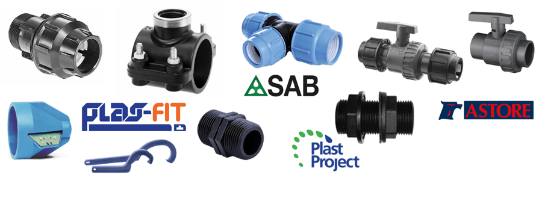

Divize
Plast
Svěrné spojky, navrtávky, kulové kohouty a závitové tvarovky pro PE trubky.

Plas-Fit
Plastové svěrné spojky, navrtávky a mrazuodolné zahradní kulové kohouty.
4 produktové řadySAB Blueseal
Plastové svěrné spojky a příslušenství na vodu pro PE trubky 16–110 mm.
2 produktové řadyPlast Project
Plastové závitové tvarovky.
1 produktová řadaGIRPI
HTA® – PVC-C tvarovky a trubky pro rozvody teplé a studené vody.
1 produktová řadaPotřebujete poradit s výběrem?
Technické poradenství po telefonu nebo e-mailem, Po–Pá 8:00–15:30.